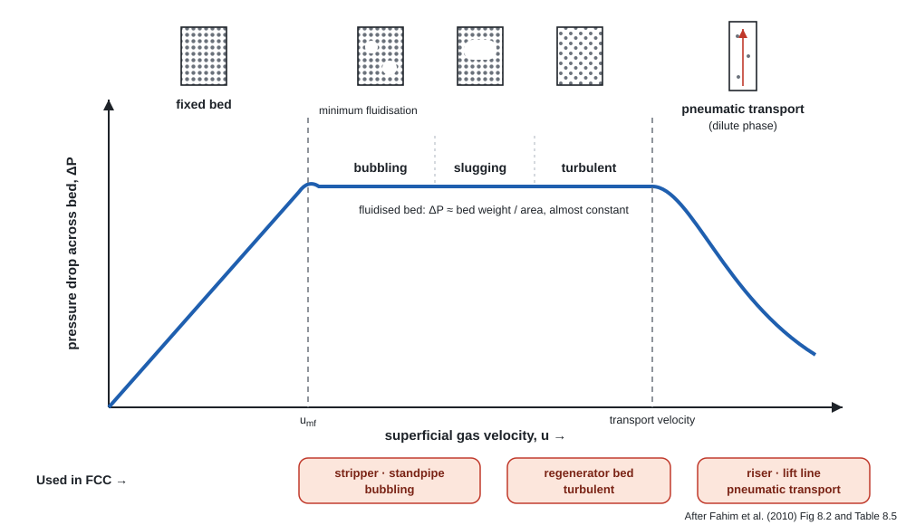
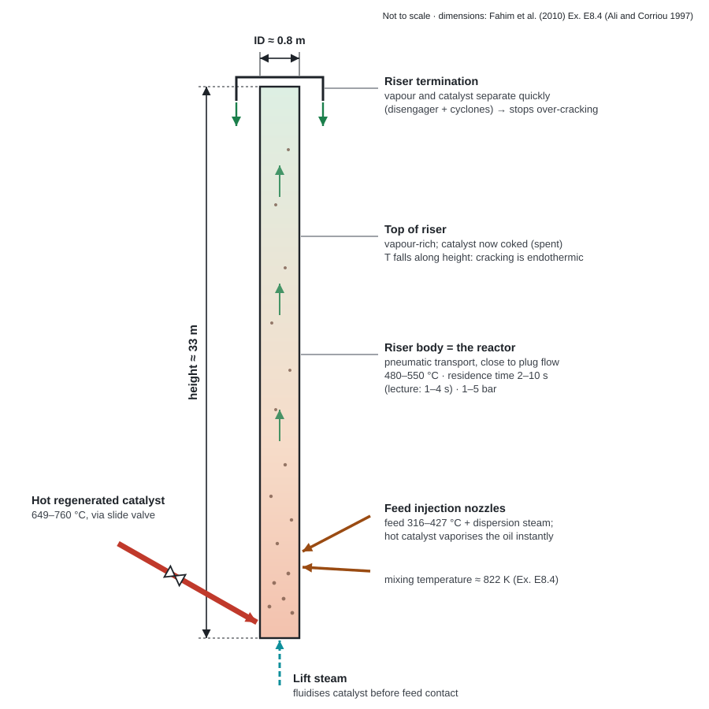
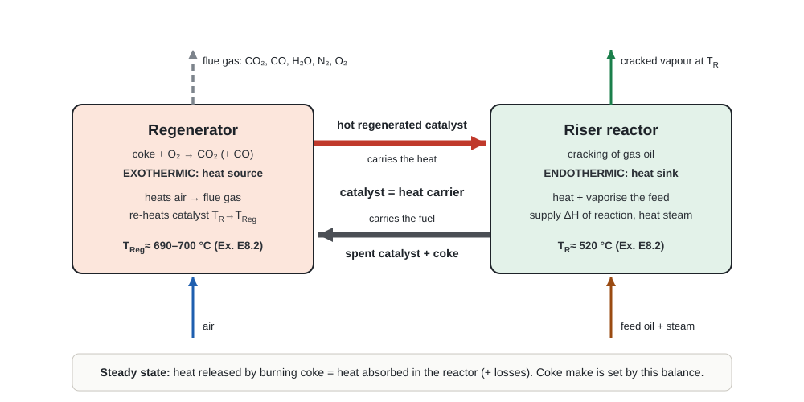
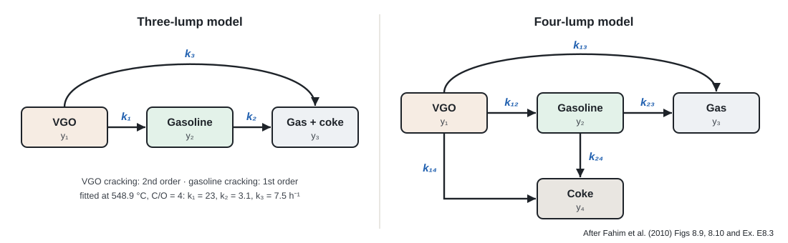

Chapter 05 · reactor
The riser reactor and regenerator
What kind of reactor the FCC uses and why, the fluidisation regime in each part of the unit, riser dimensions, the coupled heat balance with a worked example, and the lump kinetic models.
5.1Kind of reactor used
A vertical riser reactor (dilute-phase pneumatic transport, close to plug flow, 2–10 s) coupled to a fluidised-bed regenerator (turbulent regime), with fine zeolite catalyst circulating continuously between them. BTable 8.5, p. 210
- The unit is basically a reactor (riser) and a regenerator. The catalyst circulates between them: deactivated in the riser, regenerated in the regenerator. Bp. 209
- The riser is the main reactor, where the endothermic reactions take place. Bp. 210
- Supporting vessels: disengager with cyclones (separation) and a baffled steam stripper. Bp. 210
- Why a riser? Zeolites are very active, so short reaction times prevent over-cracking of gasoline to gas and coke. A catalyst–oil separator replaced the old dense-bed reactor. Lp. 19
- Before about 1965, cracking was done in a dense-phase fluidised bed in the reactor vessel. Lp. 16
5.2Fluidisation: each vessel runs in a different regime

| Location | Mode | Why |
|---|---|---|
| Regenerator | Turbulent fluidisation | Uniform burning temperature in the bed |
| Line from regenerator to riser | Bubbling fluidisation | Catalyst flows like a liquid down the standpipe |
| Riser | Pneumatic transport | Catalyst and products carried up; plug flow with a few seconds' residence time |
| Stripper | Bubbling fluidisation | Steam vaporises and recovers heavy oil and reduces coke |
| Lift line, regenerator → reactor | Pneumatic transport | Moves catalyst upward |
Source: BTable 8.5, p. 212
5.3Riser anatomy and dimensions

Typical industrial riser (Ex. E8.4)
| Quantity | Value |
|---|---|
| Inside diameter | 0.8 m |
| Height | 33 m |
| Catalyst flow | 144 kg/s |
| Feed flow | 20 kg/s |
| Catalyst inlet temperature | 960 K |
| Feed inlet temperature | 494 K |
| Riser pressure | 2.9 atm |
| Mixing temperature at inlet | 821.8 K |
| Gas density at inlet | 23.84 kg/m³ |
| Gas velocity at inlet | 1.67 m/s |
Data: BTable E8.4.1, p. 225 (Ali and Corriou, 1997).
- Catalyst-to-oil ratio here: \(144/20 = 7.2\). Dfrom E8.4.1
- Slenderness \(H/D = 33/0.8 \approx 41\): a long, thin pipe, which is why flow is close to plug flow. Dfrom E8.4.1
- Gas density, void fraction and velocity change along the riser and are updated as the balances are integrated. Temperature falls with height because the reaction is endothermic. Bpp. 223–226, Fig E8.4.2
5.4Disengager, stripper and regenerator
- Hydrocyclones in both reactor and regenerator catch solids carried over in the gas. Bp. 211
- Stripper: steam plus baffles strip oil from the catalyst before it goes to the regenerator. Bp. 210
- Regenerator: excess air burns the coke. Air rate controls either the flue-gas CO₂/CO ratio or the regenerator temperature, which is kept low enough not to damage the catalyst. Lpp. 15–16
- Some units steam-strip the regenerated catalyst to remove adsorbed oxygen before it meets the oil. Lp. 16
Partial burn (to CO)
- Older units
- Only about half the air of full burn, so a cheaper blower and lower running cost
- Flue gas rich in CO → burned in a CO boiler to recover energy
Complete burn (to CO₂)
- Newer units
- Much lower residual carbon on regenerated catalyst (range 0.01–0.4 wt%)
- More active, more selective catalyst → better product distribution at the same conversion
Hot flue gas can raise steam or drive expansion turbines that compress the regeneration air and generate electricity. Lp. 17
5.5Material and heat balance

Material balances
Steam passes through unchanged (\(S_{in} = S_{out}\)); the coke leaves on the spent catalyst. Bpp. 216–217
\(n_i\): flue-gas components CO₂, CO, H₂O, SO₂, N₂, O₂. Bp. 217
Heat balances
\(q_{coke}\) is the heat released by burning coke. Bp. 218
Worked example: catalyst circulation from the regenerator balance (Ex. E8.2)
- Coke from Ex. E8.1: 13,551 kg/h ≈ 1129 kmol/h (as carbon). Bp. 218
- Heat released: \(q_{coke} = 1129 \times 0.393\times10^{6} = 443.8\times10^{6}\ \text{kJ/h}\) for \(\ce{C + O2 -> CO2}\).
- Air: O₂ needed = 1129 kmol/h, so air = 1129/0.21 = 5376 kmol/h, giving N₂ = 4247 kmol/h and CO₂ = 1129 kmol/h.
- Temperatures: air 200 °C, spent catalyst 520 °C, flue gas 700 °C, regenerated catalyst 690 °C, reference 15 °C.
- Balance (8.18): \[ 5376(29.6)(185) + m_{cat}(1.11)(505) + 13551(21.1)(505) + 443.8\times10^{6} = 685\,[1129(46.9) + 4247(32.6)] + m_{cat}(1.11)(675) \]
- Result: \(m_{cat} = 2.58\times10^{6}\ \text{kg/h} = 43\ \text{t/min}\). Bp. 219
The feed in Ex. E8.1 is 476,250 lb/h ≈ 216,000 kg/h, so this balance implies a catalyst-to-oil ratio of about \(2.58\times10^{6}/2.16\times10^{5} \approx 12\) Dfrom E8.1–E8.2. That is higher than the 5.4 in Table 8.4 because this example's coke yield (6.3 wt%) is high. More coke burned → more heat → the catalyst must carry more of it.
5.6Kinetics: lump models
FCC has too many reactions to model one by one, so products are grouped into lumps. VGO cracking is taken as second order, gasoline cracking as first order, with the same catalyst deactivation function \(\phi\) on every reaction. B§8.13

Three-lump model: VGO (\(y_1\)), gasoline (\(y_2\)), gas + coke (\(y_3\)). Bp. 220
Four-lump model splits gas (\(y_3\)) from coke (\(y_4\)). Bpp. 220–221
Catalyst activity falls as coke content \(C_c\) builds with coking time \(t_c\). Ex. E8.4 plots activity falling along the riser as coke builds up. Bpp. 223, 226
Live chart: gasoline yield vs conversion (three-lump model)
Starts at the book's fitted constants for 548.9 °C, C/O = 4 BEx. E8.3. Move \(k_2\) (gasoline over-cracking) and watch the peak.
With the book's constants the model under-predicts gasoline at high conversion: at 82 % it gives about 44 wt% against 54 wt% measured. The shape still shows the key point: gasoline passes through a maximum, because beyond it over-cracking (k₂) destroys gasoline faster than it forms. Dintegrated Eqs 8.19–8.21